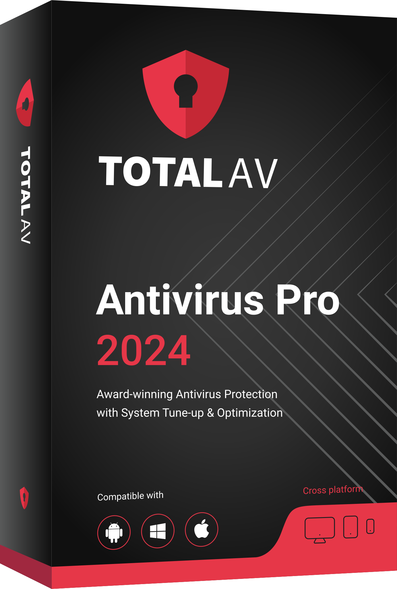
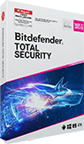

Top 8 Reasons Why You Should Get A Decent Antivirus Software Right Now
Chances are you have a PC running Windows, and you’re wondering if you still need an antivirus program to protect you. The short and simple answer is yes, and we’re going to explore eight reasons why an antivirus is more of a necessity than ever before...

1. Because attacks are on the rise...
- Security breaches have increased by 11% since 2018 and 67% since 2014. (Accenture)- Hackers attack every 39 seconds, on average 2,244 times a day. (University of Maryland)
- The cybercrime economy has grown to enjoy at least $1.5 trillion in profits each year
- Security breaches increased by 67% Over the past five years, according to Accenture’s global survey.
2. Because Windows Defender is not enough to counter zero-day attacks
According to a report by WatchGuard, at least 30 percent of malware today is new, zero-day malware that is missed by Window’s antivirus defenses.3. Because of Spyware
If you get hit with malicious spyware, it will follow you anywhere you go – even to a trusted site like Amazon or eBay. Spyware collects information about your surfing habits or personal information (such as credit card numbers), and can pass it on to third parties without you knowing. A foreign based keylogger can even monitor your keystrokes. It’s not too hard to find a key pattern that matches a credit card number…4. Because of ransomware
Ransomware is one of the most insidious forms of modern malware – it is very difficult to detect and almost impossible to cure. It freezes access to the files stored on the hard drive (or blocks the PC completely), unless you pay a hefty ransom to the infecting hacker, often in the form of Bitcoin or other virtual currency. Frequently, the only solution is a full disk formatting; the information from the disk, of course, is lost forever. Default Internet Security software and free antiviruses are virtually powerless against ransomware.5. Because of phishing attacks
A shrewd hacker can exploit even the most tech savvy. Mostly they send messages or emails from what look like legitimate organizations, such as PayPal or your personal bank. Start clicking with abandon and you’ll be redirected to a fake site, tricked into entering account information, and suddenly you’re a victim of identity theft.6. Because you need to protect all of your devices
It’s not just your computer. Just because your front door is locked and barred doesn’t mean a determined hacker can’t find another way in. IoT devices are on the up and up, and each one presents a new entrance into your home network. Your PC is safe, but is your toaster? Your baby monitor?Unfortunately we’re not joking. At over 8 billion, the number of IoT devices today has officially surpassed the world’s population; and it’s only expected to grow, reaching over 20 billion by 2025. Antivirus doesn’t solely apply to your computer, but to any device connected to your home network, including your mobile, your tablet or any other connected device. Widen the shield.
7. Because you need to protect your family
You can protect your PC. You can protect your phone. You can even protect every IoT device under your roof. That doesn’t mean everyone else in your family is safe, or that everyone else in your family is diligent. Just because you hesitate before hitting that big download button doesn’t mean your spouse will, and just because you can cruise through the dark net unscathed doesn’t mean your kids should.Just like when you’re driving a car, it’s not just your own safety that matters – it’s everyone else in the car with you.
8. Because antivirus software also offers loads of other security features
The term ‘antivirus’ is somewhat outdated. Modern security suites offer protection against malware, as well as many other nifty features.How about enhanced webcam guards, improved anti-fingerprinting, and an email hack check to alert you if your email address has been compromised? Or a built-in VPN that allows you to surf anonymously from any country? You get the picture. Antivirus is just one aspect of a whole range of features that will essentially make you safe online.
Don’t compromise your online security for a mere $40...
Following best practices such as keeping your software and operating systems updated, not downloading suspicious files, and avoiding links from untrusted sources will go a long way in protecting you. However, it’s not enough when a brand-new malware comes along and blows right past your system’s defenses.There’s always going to be a chance that something will slip through the net. If you want the highest levels of defence, add a full security suite on top.
The best paid antivirus solutions are equipped with advanced detection capabilities that go beyond filtering out commoditized threats. The use of new techniques such as machine learning, artificial intelligence, big data analytics, and behavioral tracking has turned the modern antivirus into a formidable defender, capable of detecting and blocking more sophisticated attacks.
If it's the best antivirus that you're after, we have some top recommendations for you. These leading antivirus brands are offering our readers discounted rates of up to 50% OFF, so that you can now get full protection for less than $40 per year!
- TotalAV
- Panda
- Bitdefender
1. TotalAV - $19.00
Award-winning antivirus. Trusted by 25 million users around the world.
✔ In 2024 TotalAV ranked No1 in AV-TEST industry testing scores
✔ Multi-level virus protection and outstanding detection rate
✔ Includes VPN, Firewall and many other security enhancements
✔ Unbeatable in terms of Value-For-Money
2. Panda - $27.00
Advanced machine learning antivirus with many added features at an incredible price + a FREE VPN. Highly recommended new security package!
✔ Highest levels of protection
✔ A free VPN included in every package
✔ Clean user interface
✔ No performance impact
3. Bitdefender - $42.49
Bitdefender security solutions are constantly collecting top marks from various testing centers worldwide.
✔ PC MAG Editor's Choice - 6 years in a row!
✔ Absolute security for Windows, Android, Mac® and iOS
✔ 500 million satisfied users worldwide
✔ Parental control offers parents additional online security